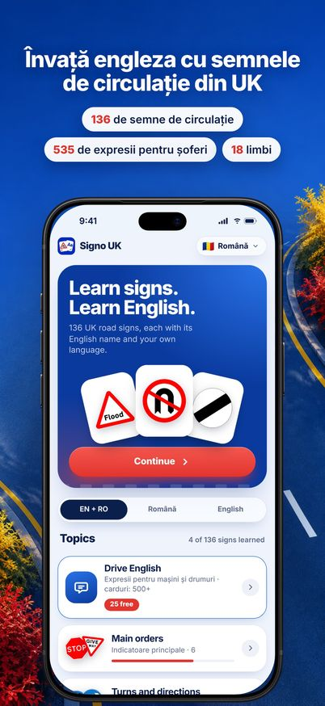
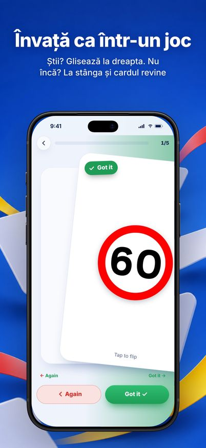
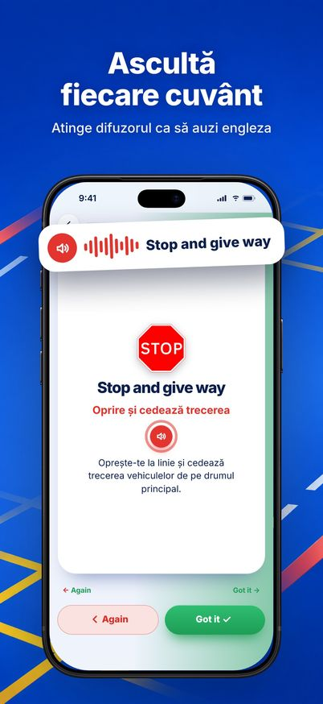
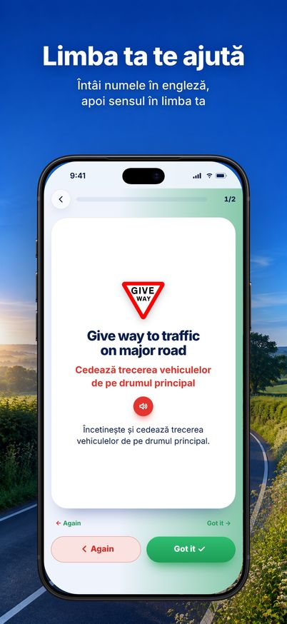
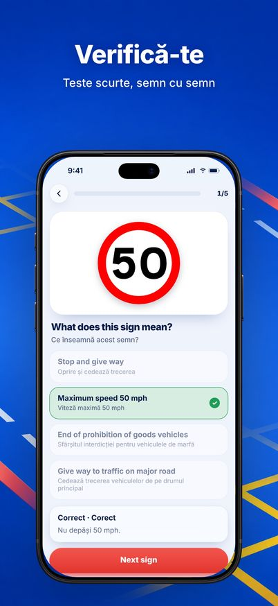
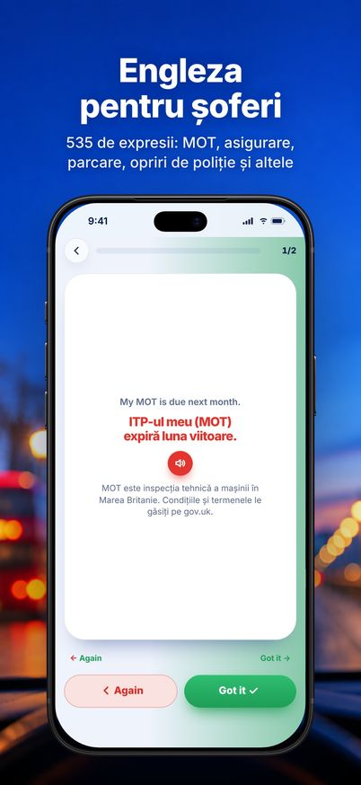
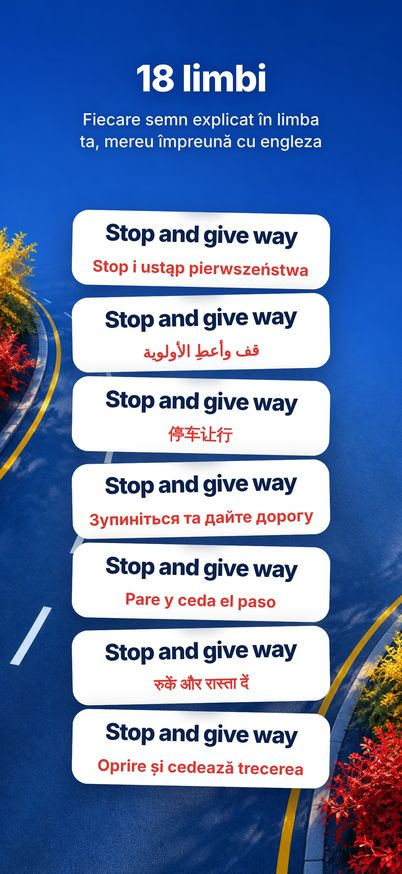
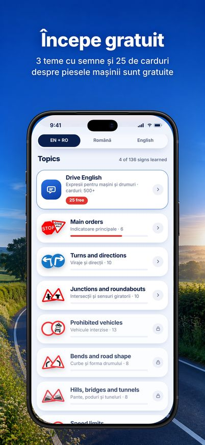
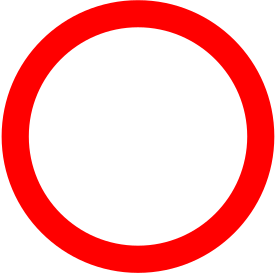

Indicatoare rutiere din Marea Britanie, explicate în română
Ce înseamnă fiecare indicator și cum se numește în engleză. Signo este o aplicație pentru iPhone: 136 de indicatoare și 535 de expresii pentru condus în Marea Britanie, explicate în română.
Descarcă din App StoreGratuit: 3 teme cu indicatoare și 25 de cuvinte despre piesele mașinii. Signo Pro deblochează tot.


Învață ca într-un joc
Știi indicatorul — glisează la dreapta, nu — la stânga și revine. Denumirea în engleză se aude cu voce britanică, apoi urmează un test scurt.








Indicatoare frecvente și semnificația lor
Apasă pe un indicator pentru explicație.
- Oprire și cedează trecereaStop and give way
 Cedează trecerea vehiculelor de pe drumul principalGive way to traffic on major road
Cedează trecerea vehiculelor de pe drumul principalGive way to traffic on major road Accesul interzis vehiculelorNo entry for vehicular traffic
Accesul interzis vehiculelorNo entry for vehicular traffic Se aplică limita națională de vitezăNational speed limit applies
Se aplică limita națională de vitezăNational speed limit applies- Viteză maximă 30 mphMaximum speed 30 mph
 Viteză maximă 20 mphMaximum speed 20 mph
Viteză maximă 20 mphMaximum speed 20 mph Viteză maximă 40 mphMaximum speed 40 mph
Viteză maximă 40 mphMaximum speed 40 mph Viteză maximă 50 mphMaximum speed 50 mph
Viteză maximă 50 mphMaximum speed 50 mph Viteză maximă 60 mphMaximum speed 60 mph
Viteză maximă 60 mphMaximum speed 60 mph Intrare în zona de 20 mphEntry to 20 mph zone
Intrare în zona de 20 mphEntry to 20 mph zone Depășirea interzisăNo overtaking
Depășirea interzisăNo overtaking Virajul la dreapta interzisNo right turn
Virajul la dreapta interzisNo right turn Virajul la stânga interzisNo left turn
Virajul la stânga interzisNo left turn Întoarcerea interzisăNo U-turns
Întoarcerea interzisăNo U-turns Ține stângaKeep left
Ține stângaKeep left Mini-sens giratoriuMini-roundabout
Mini-sens giratoriuMini-roundabout- Sens giratoriu în fațăRoundabout ahead

Toate vehiculele interziseAll vehicles prohibited Vehiculele cu motor interziseNo motor vehicles
Vehiculele cu motor interziseNo motor vehicles Oprirea interzisă pe carosabilul principalNo stopping on main carriageway
Oprirea interzisă pe carosabilul principalNo stopping on main carriageway Traseu rezervat autobuzelor, bicicletelor și taxiurilorRoute for use by buses, pedal cycles and taxis only
Traseu rezervat autobuzelor, bicicletelor și taxiurilorRoute for use by buses, pedal cycles and taxis only Intrare în zona de parcare controlatăEntrance to controlled parking zone
Intrare în zona de parcare controlatăEntrance to controlled parking zone Doar pentru deținătorii de permisPermit holders only
Doar pentru deținătorii de permisPermit holders only Doar pentru deținătorii de card de persoană cu dizabilitățiDisabled badge holders only
Doar pentru deținătorii de card de persoană cu dizabilitățiDisabled badge holders only Loc de parcareParking place
Loc de parcareParking place Radare de vitezăSpeed cameras
Radare de vitezăSpeed cameras Stop – PolițiaStop - Police
Stop – PolițiaStop - Police Punctul de la care se aplică regulile de pe autostradăPoint at which motorway regulations start to apply
Punctul de la care se aplică regulile de pe autostradăPoint at which motorway regulations start to apply Semafoare în fațăTraffic signals ahead
Semafoare în fațăTraffic signals ahead Trecere de pietoni (zebră)Zebra crossing
Trecere de pietoni (zebră)Zebra crossing Copii care merg la sau vin de la școală sau loc de joacă în fațăChildren going to or from school or playground ahead
Copii care merg la sau vin de la școală sau loc de joacă în fațăChildren going to or from school or playground ahead Lucrări rutiereRoad works
Lucrări rutiereRoad works Drum alunecosSlippery road
Drum alunecosSlippery road Trecere la nivel cu calea ferată cu barieră în fațăLevel crossing with gate or barrier ahead
Trecere la nivel cu calea ferată cu barieră în fațăLevel crossing with gate or barrier ahead Trecere la nivel cu calea ferată fără barieră în fațăRailway level crossing without gate or barrier ahead
Trecere la nivel cu calea ferată fără barieră în fațăRailway level crossing without gate or barrier ahead Dă prioritate vehiculelor din sens opusGive priority to vehicles from opposite direction
Dă prioritate vehiculelor din sens opusGive priority to vehicles from opposite direction Prioritate față de vehiculele din sens opusTraffic has priority over oncoming vehicles
Prioritate față de vehiculele din sens opusTraffic has priority over oncoming vehicles Vehicule mai înalte decât înălțimea indicată interziseNo vehicles over height shown
Vehicule mai înalte decât înălțimea indicată interziseNo vehicles over height shown Intersecție în T în fațăT-junction ahead
Intersecție în T în fațăT-junction ahead Intersecție în cruce în fațăCrossroads ahead
Intersecție în cruce în fațăCrossroads ahead Drum cu o singură bandăSingle track road
Drum cu o singură bandăSingle track road Loc de încrucișarePassing place
Loc de încrucișarePassing place
Piesele mașinii în engleză
25 de cuvinte din capitolul gratuit Drive English. Apasă pe un cuvânt ca să-l auzi.
Toate cele 136 de indicatoare sunt în aplicație
Gratuit: 3 teme cu indicatoare și 25 de cuvinte despre piesele mașinii. Signo Pro deblochează tot.